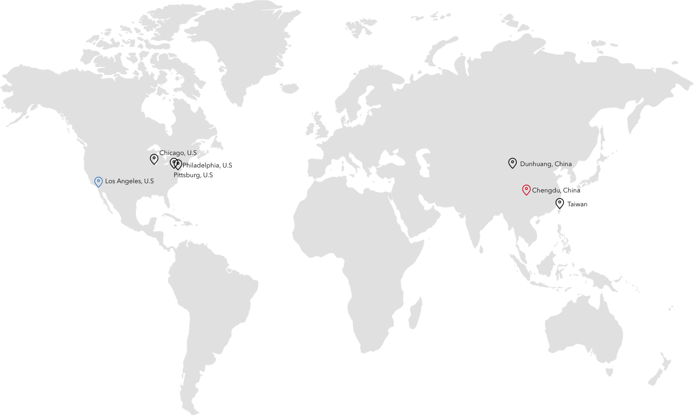

Hi, I'm Yolanda Xiao!
I'm a first year Computer Science Master student at UCLA.
I program.
I take pictures.
Projects
NIH BD2K Center of Excellence in Biomedical Computing
Software Developer Intern | Los Angeles
• Apply machine learning techniques to extract metadata from research papers in PDF format
• Use Spring and Restful API to build web interface for PDF input and JSON output
• Utilize JSON, javascript and d3 to visualize data and create an easily accessible platform for users
- Website link: http://dev.aztec.io:8092/
- Github link: https://github.com/YolandaXiao/AZtools
Bruin Mobile, UCLA Student Media
Android Developer | Los Angeles
• Use React-native tools to integrate design and map view to build a tours app
• Ranked 700+ locations around UCLA based on google search results in python
Link: https://play.google.com/store/apps/details?id=com.uclastudentmedia.UCLAMaps

Alberta stroke program early CT score (ASPECT) Automation Project
Researcher | Los Angeles
I implemented a Matlab program to score CT images automatically using image processing and machine learning techniques. In the process, I applied co-registration on brain images in both 3D and 2D context, and used SVM to classify the brain regions
Computer Graphics Lab, National Taiwan University of Science and technology
Research Assistant | Taipei, Taiwan
I studied the different features of Unity game engine, and designed and implemented platformer and casino games. I also collaborated with graduate students in a lab project to construct a casino game for a client.
Passion
Sometimes I put on music and spend hours sketching.

Pixar. Monster’s Inc has been my favorite animation since I was a kid. It gives me hope and warmth.

I love new challenges :)

I like Museums. I like impressionism. I often stay in front an artwork for a long time and just stare at it. The first thing I do when I visit a place is to visit its local art museum. An museum represent a city. Places I’ve been to: Los Angeles County Museum of Art Art Institute of Chicago Philadelphia Musuem of Arts Taipei Fine Arts Museum
Trying to learn woodwork. A new media for art.
Calligraphy helps me to clear my mind and think.

I see photography as my passion for life. I explore this world through photography, I tell stories through photography, I try to understand my life through photography.
Seal carving is a traditional form of art in China. I use it as my new media for art. Anchient Chinese art and aesthetics came to me as I explore in seal carving.
I want to go


Copyright © 2016 Yolanda Xiao. All Rights Reserved.